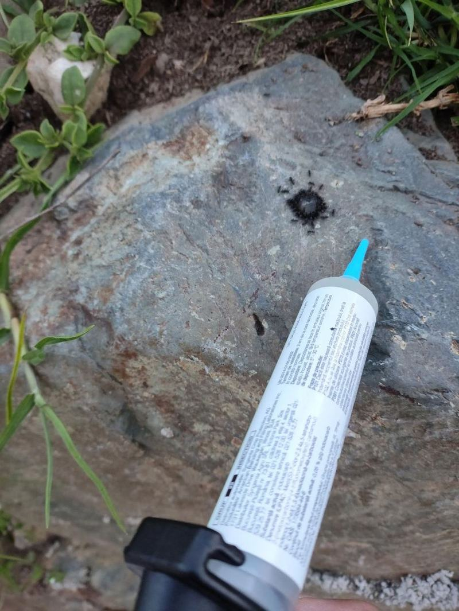

Traitement professionnel ciblé contre les espèces d'insectes rampants implantées en Corse. Intervention rapide pour particuliers et établissements professionnels (CHR, commerces). Les termites relèvent d'un protocole distinct de la désinsectisation courante : voir notre traitement anti-termites.
Espèces d'insectes présentes en Corse
Cafards & blattes en Corse
Blatte germanique : la plus courante en intérieur. De petite taille (12-15 mm), elle nidifie dans les zones chaudes et humides (cuisines, arrière des réfrigérateurs, lave-vaisselle, moteurs).
Blatte orientale : plus grande et très sombre (20-30 mm), elle privilégie les sous-sols, caves, vide-sanitaires et canalisations d'égout avant de remonter dans les logements.
Blatte américaine : très présente sur le littoral corse en période estivale. Grande (35-50 mm), rougeâtre, elle vole sur de courtes distances et s'infiltre par les réseaux extérieurs.
Cafard des jardins : espèce vivant principalement en extérieur (jardins, tas de bois, compost), brun clair et plus petite (10-14 mm). Elle pénètre occasionnellement dans les habitations, attirée par la lumière en soirée, surtout en fin d'été.
Dangers sanitaires : vecteurs de salmonellose, E. coli et asthme par dépôt de leurs déjections sur les surfaces alimentaires.
Fourmis en région méditerranéenne
Tapinoma magnum : l'espèce la plus problématique actuellement en Corse. Petite, noire et luisante, elle forme des super-colonies pouvant compter plusieurs centaines de reines sans rivalité entre nids, capables de s'étendre sur plusieurs hectares. Elle dégage une odeur de beurre rance lorsqu'elle est écrasée (contre une odeur de vinaigre pour la plupart des autres fourmis) et s'attaque aussi bien aux jardins qu'aux équipements électriques (moteurs de portails, compteurs).
Fourmi d'Argentine : fléau majeur en Corse. Petite et très agressive, elle forme des supercolonies à reines multiples (polygynie), rendant les insecticides classiques inefficaces.
Fourmi charpentière (Camponotus) : de grande taille, elle creuse les structures en bois, charpentes, doublages et isolants pour y installer sa colonie, causant de lourds dégâts structurels.
Fourmi noire des jardins / d'appartement : envahit les habitations dès les premiers beaux jours à la recherche de substances sucrées et de réserves de nourriture.
Nuisances : souillure massive des réserves alimentaires, détérioration des matériaux et réinfestation continue si le nid principal n'est pas détruit.

Traitement ciblé d'une colonie de fourmis
Chaque espèce appelle une stratégie distincte : les cafards et blattes se traitent au gel appât pour exploiter leur comportement grégaire, les fourmis par appât retardé rapporté au nid, et les mouches par élimination des gîtes de ponte avant tout traitement. Le lexique des nuisibles détaille les espèces rencontrées en Corse.
Quelles sont les espèces de cafards les plus fréquentes en Corse ?
En Corse, nous traitons principalement trois espèces : la blatte germanique (très fréquente dans les cuisines et l'électroménager), la blatte orientale (dans les sous-sols, canalisations et zones humides) et la blatte américaine (de grande taille, très active durant la saison chaude sur la frange littorale).
Pourquoi les insecticides du commerce ne marchent pas contre la fourmi d'Argentine ?
La fourmi d'Argentine possède des colonies polygynes comprenant plusieurs reines. Les sprays répulsifs du commerce ne tuent que quelques ouvrières en surface, ce qui alerte la colonie et provoque l'éclatement du nid en de multiples foyers secondaires. Notre traitement utilise des appâts gélifiés à retardement que les ouvrières transportent directement jusqu'aux reines pour stopper la ponte.
Comment reconnaître la Tapinoma magnum et pourquoi est-elle si difficile à éliminer ?
La Tapinoma magnum se reconnaît à sa petite taille, sa couleur noire luisante et surtout à l'odeur de beurre rance qu'elle dégage lorsqu'on l'écrase (les autres espèces sentent plutôt le vinaigre). Elle est extrêmement difficile à éliminer car elle forme des super-colonies réparties sur plusieurs nids interconnectés, sans rivalité entre eux, comptant parfois des centaines de reines. Attention : un traitement anti-fourmis du commerce utilisé au hasard peut aggraver la situation — il élimine surtout les fourmis locales concurrentes, qui freinaient naturellement la Tapinoma, et lui laisse le terrain libre. Une identification précise avant traitement est indispensable.
Comment identifier la présence de fourmis charpentières ?
Les fourmis charpentières sont nettement plus grandes que les fourmis ordinaires (jusqu'à 15 mm). La présence de sciure de bois très fine au pied de vos plinthes, poutres ou cloisons, ainsi que des bruits de grattage légers dans les murs pendant la nuit sont les signes révélateurs d'une nidification active.
Comment se déroule un traitement contre les blattes germaniques et orientales ?
Nous appliquons un gel insecticide professionnel de haute appétence sous forme de micro-gouttes au niveau des points stratégiques (charnières, moteurs, arrière des meubles, passages de tuyauterie). Le produit est inodore, sans danger pour la famille et n'exige aucune évacuation du logement ni fermeture du commerce.
Proposez-vous des contrats de prévention HACCP pour les professionnels ?
Oui. Nous proposons des contrats de maintenance préventive et curative HACCP pour les restaurants, hôtels, boulangeries et établissements alimentaires en Corse. Chaque intervention donne lieu à un rapport d'expertise et à la tenue de votre registre sanitaire réglementaire.